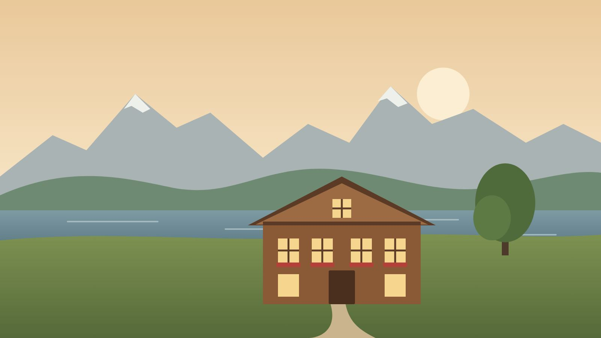
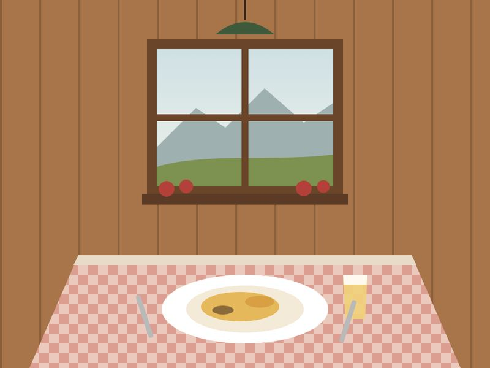

Gasthaus Musterhof
Innerschweizer Küche mit Zutaten aus der Region, in der Gaststube oder auf der Terrasse mit Blick auf den See.
Musterweg 1, Musterdorf SZ
Öffnungszeiten
| Montag | 08.30–23.00 |
|---|---|
| Dienstag | 08.30–23.00 |
| Mittwoch | 08.30–23.00 |
| Donnerstag | 08.30–23.00 |
| Freitag | 08.30–24.00 |
| Samstag | 10.00–24.00 |
| Sonntag | Ruhetag |
Warme Küche 11.30–13.30 und 18.00–21.00. Ferien und Feiertage stehen jeweils hier.
Speisekarte
Vorspeisen
- Kürbiscremesuppe mit KernenCHF 9.50
- Bouillon mit FlädliCHF 8.50
- Gemischter Salat vom BuffetCHF 9.50
- Plättli mit Trockenfleisch und BergkäseCHF 18.50
Hauptgänge
- Luzerner Chügelipastete mit ReisCHF 32.00
- Cordon bleu vom Schwein mit Pommes frites und GemüseCHF 34.00
- Älplermagronen mit Apfelmus und RöstzwiebelnCHF 24.00
- Hirschpfeffer mit Spätzli, Rotkraut und Marroni (im Herbst)CHF 39.00
Desserts
- Zuger KirschtorteCHF 9.50
- Vermicelles mit Meringue und RahmCHF 11.50
- Caramelköpfli mit RahmCHF 8.50
Preise in Franken inklusive Mehrwertsteuer. Fleisch und Fisch aus der Schweiz. Fragen Sie uns nach Allergenen.
Über uns
Familie Muster führt den Musterhof in zweiter Generation. In der Küche steht, was die Bauern im Tal liefern: Fleisch, Käse, Gemüse und im Herbst Wild. In der Gaststube sind Vereine, Familien und Wandergruppen gleichermassen willkommen.

Kontakt und Anfahrt
- Adresse
- Gasthaus Musterhof
Musterweg 1
Musterdorf SZ
Karte öffnen (OpenStreetMap) - Telefon
- 041 xxx xx xx (Beispiel)
- info@musterhof.example (Beispiel)
Mit dem Bus bis Haltestelle «Musterdorf, Dorf», dann drei Minuten zu Fuss. Parkplätze beim Haus.